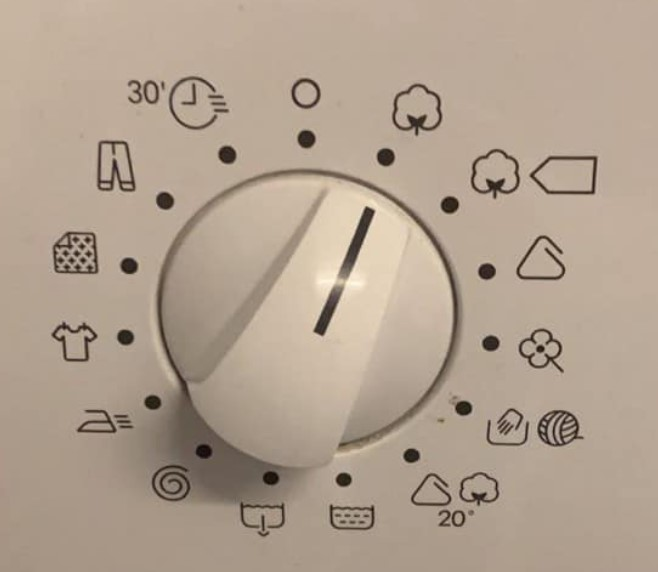
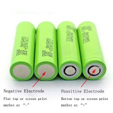
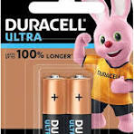

Usability Problems in Everyday Objects

Problem 1: Washing Machine Control Panel
What is wrong with it?
The control panel on the washing machine dial shown above has hard-to-read buttons.The symbols are not immediately clear to the person wanting to use the washer.The pictures on the dial would require the user to have some type of knowledge before using the machine hence it is not good for a first time user.Additionally, the layout is cluttered with too many options, some of which are rarely used.
Usability Issues:
- Learnability: It is challenging for new users to understand how to operate the washing machine and they will constantly have to read the manual.
- Efficiency: It will take longer to do laundry , especially when setting a timer or adjusting the load and water content in the machine , due to the small, cramped buttons.
- Safety: Because it is so hard to read , this could lead to the user inputing incorrect settings, such as washing with warm water instead of cold which will cause the colors in colored clothes to run
Suggested Fix:
A recomendation for improving the design of this washing machine dial is to
Add Text labels : add small text labels besides the pictures to clearly state what each symbol represents
Use Color Coding : this will make it easier for the user to quickly find the right cycle
Increase icon size : Larger icons are easier to see and understand hence reducing the users chances of making mistakes
Problem 2: Inserting Batteries
 
Description:
when it comes to batteries,they usualy give me some trouble.They can be hard to figure out which way to insert the batteries or which size to use if its not clearly marked on the object or appliance.They are aslo a bit hard to take out and sometimes i find myself clawing into them with my fingers to remove or hitting on the appliance to remove them.I also dont know when they are about to die
Usability Issues:
- Learnability: It’s hard for users to correctly insert or use a battery especially if the positive and negative signs arent marked on them.
- Efficiency: because we do not know when the battery will run out this can lead to interuptions constantly with our devices and appliances.It can also be time consuming if the batteries are hard to take out.
- Safety: the batteries can leak,overheat or explode if misused.
Suggested Fix:
- Battery life indicators : place a simple battery life indicator such as an led light
- textured surface Design batteries with a textured surface to provide better grip during removal.
- Color coded polarity markings : the pusitive and negative sides of the batter can be color coded so its easier for the use to know which side is which.
Problem 3: Door Handle with Keyhole
Description:
The door handle on my front door has the keyhole placed directly beneath the handle. The keyhole is small and not illuminated, making it difficult to insert the key, especially at night.
Usability Issues:
- Learnability: The keyhole’s placement beneath the handle is not immediately obvious, leading to confusion.
- Efficiency: It’s difficult to quickly unlock the door, especially in low-light conditions, due to the keyhole’s small size and poor visibility.
- Safety: Struggling to insert the key at night could delay entry into the house, potentially putting the user in an unsafe situation.
Suggested Fix:
Consider relocating the keyhole to a more visible and accessible position, possibly integrating a small LED light to illuminate the area. Another option could be to use a larger keyhole or a more intuitive locking mechanism, such as a keypad.
Conclusion
In analyzing these everyday objects, it’s clear that usability is often compromised in favor of aesthetics or cost-saving measures. By focusing on the LES dimensions—Learnability, Efficiency, and Safety—designers can create more user-friendly products that are both functional and intuitive.